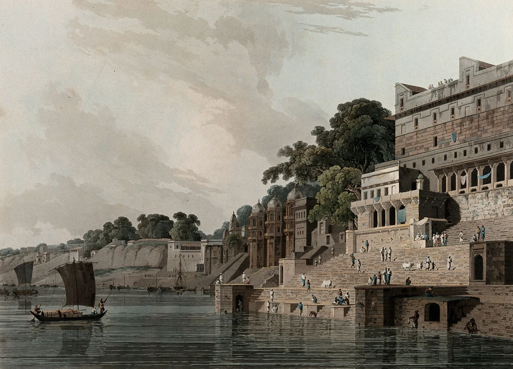

SANSKRIT RECITATION · LISTENING EDITION
मनुस्मृति
Manusmṛti
Twelve adhyāyas, two thousand six hundred and eighty-four ślokas, held against a synthetic recitation and read as one continuous score. The verse you hear is the verse you see, line by line.
- ADHYĀYA
- 12
- ŚLOKAS
- 2,684
- HALF-VERSES
- 5,368
- VOICE
- Vāgdhenu · synthetic
Adhyāya one

Edition notes
What this is
The text is the Kullūka (K) verse sequence of the Manusmṛti, 2,684 verses in twelve chapters, each verse divided into its two half-verses. It is a transcription of a particular electronic text, not a critical reconstruction or a new collation against manuscripts.
The recitation is synthetic: every half-verse is spoken by a neural voice model, not by a human reciter. It is useful for pacing and listening; it carries no claim to a traditional recitation lineage, and its pronunciation should not be treated as authority on Vedic or śāstric chanting.
Text and licence
The Devanagari was extracted from revisions by the contributors to Sanskrit Wikisource, retrieved 21 November 2026. The Wikisource text is available under CC BY-SA 4.0; this extraction and edition are shared under the same licence.
Editorial decisions: only verse labels were changed where the electronic text mislabelled a verse; alternate M numbers were dropped; four M-only verses were excluded without shifting any K number; HTML, daṇḍas, stray brackets and a zero-width space were removed. Sanskrit spellings were not modernised.
Voice
Audio is generated with the Vāgdhenu Sanskrit text-to-speech research model (Prathosh A. P. and contributors) running on Kaggle GPUs at 32 diffusion steps, assembled into one track per chapter with per-half-verse timings taken from the rendered durations.
Line timings are exact; the karaoke sweep within a line is interpolated across its syllables in proportion to their length, as it is in any karaoke reader.
Plates and type
The chapter plate is Thomas Daniell, Dasasamadhi Ghat on the Ganges at Varanasi, hand-coloured aquatint, May 1796. Wellcome Collection 27607i, public domain mark; it is used here as a frontispiece, not as a depiction of the text’s own time or place.
Typefaces: Noto Serif Devanagari (SIL OFL), Fraunces (SIL OFL), IBM Plex Mono (SIL OFL). The three-dimensional field is generated live in WebGL; nothing on this page is a photograph of a sphere.
| Adhyāya | Ślokas | Revision |
|---|